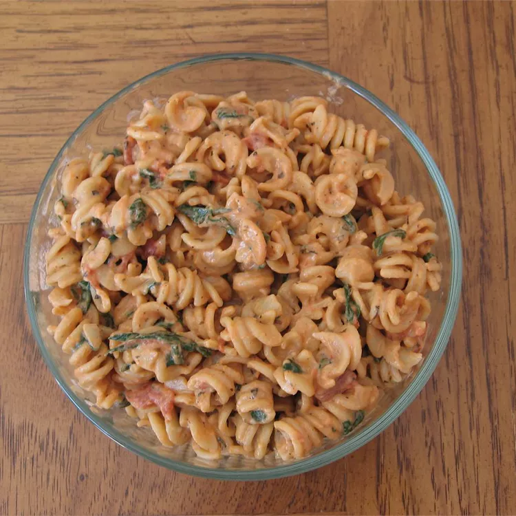

Spinach Ziti

A simple, colorful pasta dish. Serve with a tossed salad and freshly grated parmesan cheese for a great meal.
Ingredients
- 8 ounces ziti pasta
- 1 (14.5 ounce) can Italian-style stewed tomatoes
- ⅛ teaspoon crushed red pepper flakes
- 4 ounces fresh spinach, washed and chopped
- 2 ounces cream cheese
- ¼ teaspoon ground nutmeg
Directions
- Bring a large pot filled with salted water to a boil. Add ziti and cook until tender but still firm, about 12 minutes.
- Meanwhile, in a medium sized non-reactive pan, combine tomatoes and hot pepper flakes. Warm over medium-low heat, breaking up tomatoes if necessary.
- Drain pasta and return to hot pan. Add spinach, cream cheese and nutmeg. Cook, stirring, over low heat until spinach wilts, 1-2 minutes. Pour tomato sauce over spinach ziti. Stir and toss gently to mix.